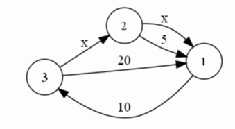

在遥远的未来，行星之间的食品运输将依靠单向的贸易路线。每条路径直接连接两个行星，且其运输时间是已知的
。贸易商协会打算利用一项最近发现的新技术——超空间旅行，以增加一些新的航线。通过超空间旅行的航线也是
单向的。由于该项技术仍处于试验阶段，超空间旅行的时间目前是未知的，但它不取决于行星之间的距离，所以每
个超空间旅行的路线将花费等量的时间。下图是三个相互联通的行星及其运输时间的例子。行星使用正整数标号，
超空间旅行时间记为“x”（图片对应第输入样例）：过境的时间以天计，并且始终是一个正整数。贸易商协会希
望对引进新航线的后果进行分析：对于某两个行星A和B，他们想知道对于任意的x，从A到B的最短路径的总中转时
间的所有可能的值。例如，在上述情况中，从星球2到星球1的最短路径所需时间可以取值5（如果x≥5），4，3，2
，或1天（如果x<5）
